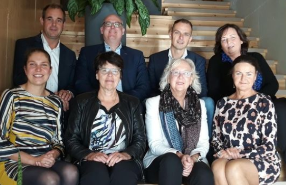

Wethouders bezoeken Oranje Huis

19
oktober 2018
Wethouders uit Flevoland en Gooi en Vechtstreek bezochten donderdag het Oranje Huis in Almere. Het
betrof een gecombineerd werkbezoek aan het Oranje Huis én Veilig Thuis Flevoland, waardoor de
wethouders een goed beeld kregen van de gehele keten van hulpverlening bij huiselijk geweld in
Flevoland en Gooi en Vechtstreek.
Aldrik Dijkstra, wethouder Jeugdbeleid en Veilig Thuis in Almere, gaf bij het begin van het bezoek
aan hoe belangrijk hij het vindt dat er in Flevoland goede voorzieningen zijn voor slachtoffers van
huiselijk geweld en kindermishandeling. Wethouder Dijkstra: ‘Ik ben zeer onder de indruk van de
werkwijze en verhalen van het Oranje Huis die ik heb meegekregen en de samenwerking daarbij met
Veilig Thuis Flevoland. Door goed samen op te trekken kan er aan de voorkant en op maat goede hulp
geboden worden’.